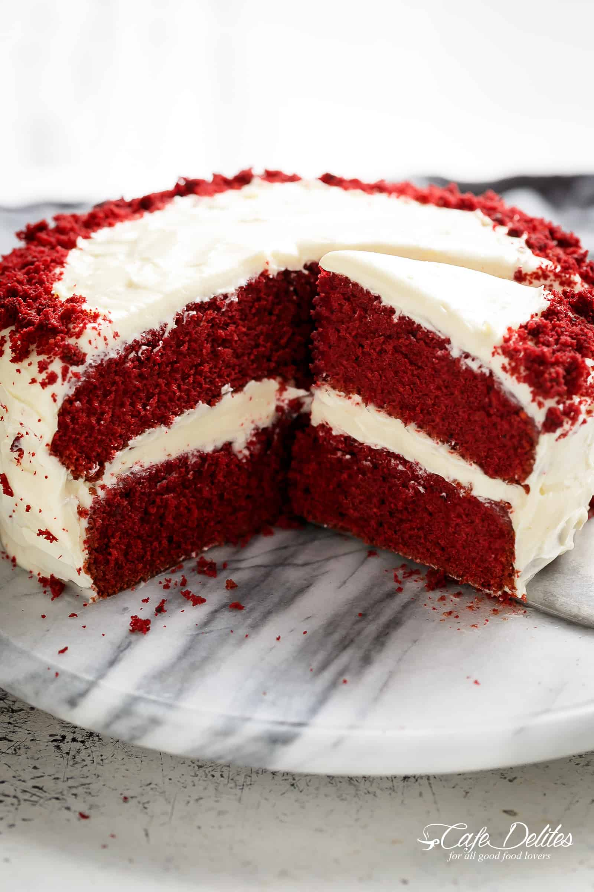
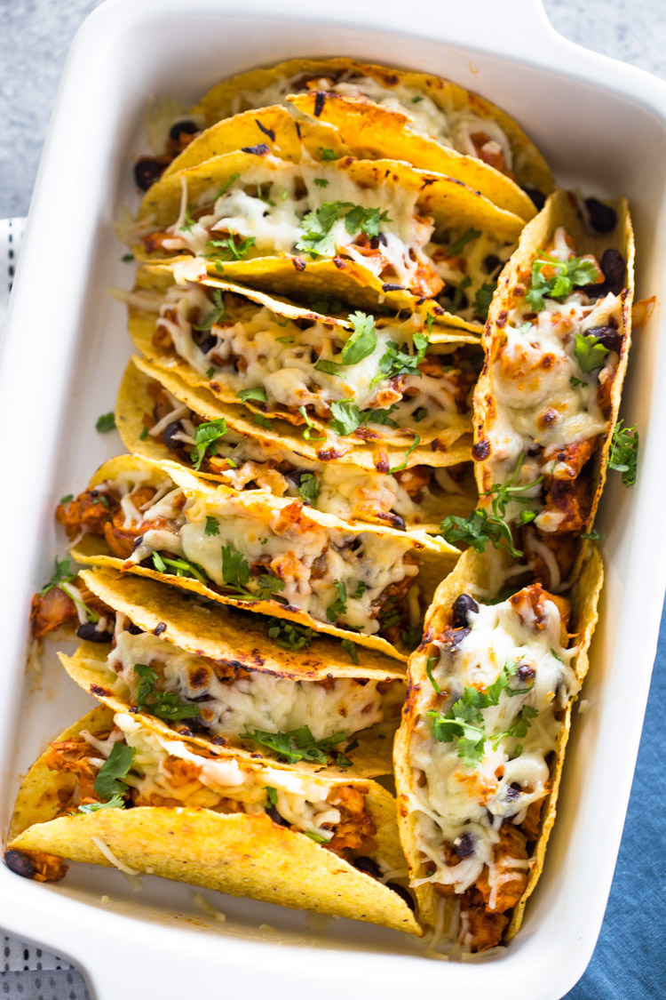

| Ingredents |
directions |
| Cake Flour |
Preheat oven to 350°F (177°C). Grease two 9-inch cake pans, line with parchment paper, then grease the parchment paper. Parchment paper helps the cakes seamlessly release from the pans. |
| Unsweetened Cocoa Powder |
Whisk the flour, baking soda, cocoa powder, and salt together in a large bowl. Set aside. |
| Butter & Oil |
Using a handheld or stand mixer fitted with a paddle attachment, beat the butter and sugar together on medium-high speed until combined, about 1 minute. Scrape down the sides and up the bottom of the bowl with a rubber spatula as needed. Add the oil, egg yolks, vanilla extract, and vinegar and beat on high for 2 minutes. (Set the egg whites aside.) Scrape down the sides and up the bottom of the bowl with a rubber spatula as needed. |
| Buttermilk |
With the mixer on low speed, add the dry ingredients in 2-3 additions alternating with the buttermilk. Beat in your desired amount of food coloring just until combined. I use 1-2 teaspoons gel food coloring. Vigorously whisk or beat the 4 egg whites on high speed until fluffy peaks form as pictured above, about 3 minutes. Gently fold into cake batter. The batter will be silky and slightly thick.
Divide batter between cake pans. Bake for 30-32 minutes or until the tops of the cakes spring back when gently touched and a toothpick inserted in the center comes out clean. If the cakes need a little longer as determined by wet crumbs on the toothpick, bake for longer. However, careful not to overbake as the cakes may dry out. Remove cakes from the oven and cool completely in the pans set on a wire rack. The cakes must be completely cool before frosting and assembling. |
Tacos

| Ingredents |
directions |
| 2 tablespoons reduced sodium soy sauce
2 tablespoons freshly squeezed lime juice
2 tablespoons canola oil, divided |
In a medium bowl, combine soy sauce, lime juice, 1 tablespoon canola oil, garlic, chili powder, cumin and oregano. |
| 3 cloves garlic, minced
2 teaspoons chili powder
1 teaspoon ground cumin |
In a gallon size Ziploc bag or large bowl, combine soy sauce mixture and steak; marinate for at least 1 hour up to 4 hours, turning the bag occasionally. |
| 1 teaspoon dried oregano
1 1/2 pounds skirt steak, cut into 1/2-inch pieces
12 mini flour tortillas |
Heat remaining 1 tablespoon canola oil in a large skillet over medium high heat. Add steak and marinade, and cook, stirring often, until steak has browned and marinade has reduced, about 5-6 minutes, or until desired doneness. |
| 3/4 cup diced red onion
1/2 cup chopped fresh cilantro leaves
1 lime, cut into wedges |
Serve steak in tortillas, topped with onion, cilantro and lime. |